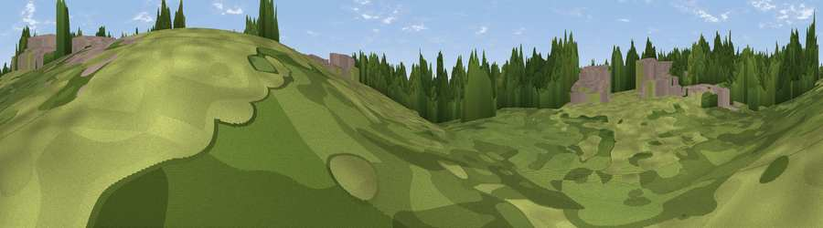

Viewpoint near Stevenage
#45906 in England · top 91% of its area beats it · near StevenageThe view, rendered

A 360° render of this exact spot computed from the terrain model, tree cover and land cover — summer colours, afternoon light, calibrated against photographs of famous viewpoints. Real trees, hedges and buildings will differ in detail.
The panorama
Grey silhouette: terrain skyline in each direction (720 bearings, Earth curvature and refraction included). Dashed green: skyline with trees (+15 m) and buildings (+8 m) as obstacles. Blue strip: how far the ground is visible on each bearing.
Where the view opens
Wedge length = distance to the farthest visible ground on that bearing (vegetation-aware). Rings at 10, 25 and 50 km.
What fills the view
41% woodland · 39% grassland · 18% built-up · 2% water ·
Angular shares of the visible panorama (visual magnitude), not map area. Landscape diversity 0.50 (0–1 Shannon).
Key numbers
More beautiful places nearby
The staircase of upgrades: each row has a higher view potential than everything closer. Driving times are estimates from straight-line distance, calibrated against real road routing — check an actual route before setting out.
| Place | Direction | Drive | Score |
|---|---|---|---|
| Viewpoint near Aston | ESE · 3 km | ~8 min | 28.3 |
| Viewpoint near Baldock | N · 8 km | ~16 min | 37.1 |
| Viewpoint near Baldock | N · 8 km | ~16 min | 53.9 |
| Viewpoint near Great Offley | WNW · 13 km | ~24 min | 54.4 |
| Viewpoint near Hexton | WNW · 14 km | ~25 min | 65.4 |
| Viewpoint near Church End | W · 25 km | ~40 min | 65.8 |
| Beacon Hill | WSW · 30 km | ~47 min | 74.1 |
| Viewpoint near Halton | WSW · 39 km | ~58 min | 74.3 |
51.90551, -0.17914 · source: osm viewpoint · position refined by local search. Computed location — check access rights before visiting.